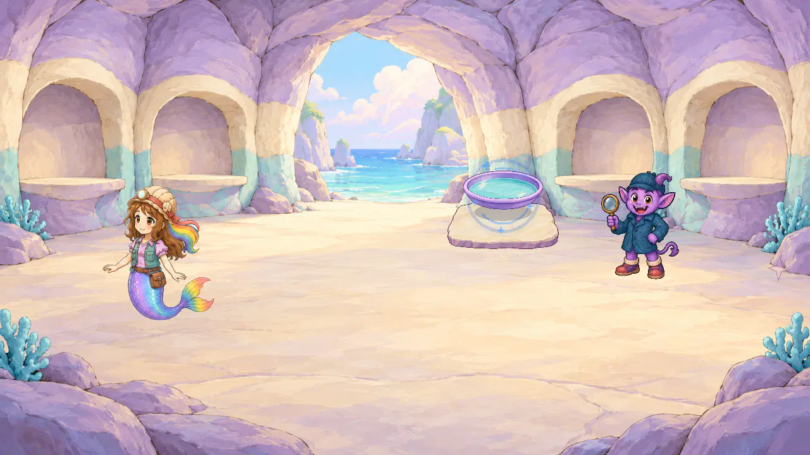
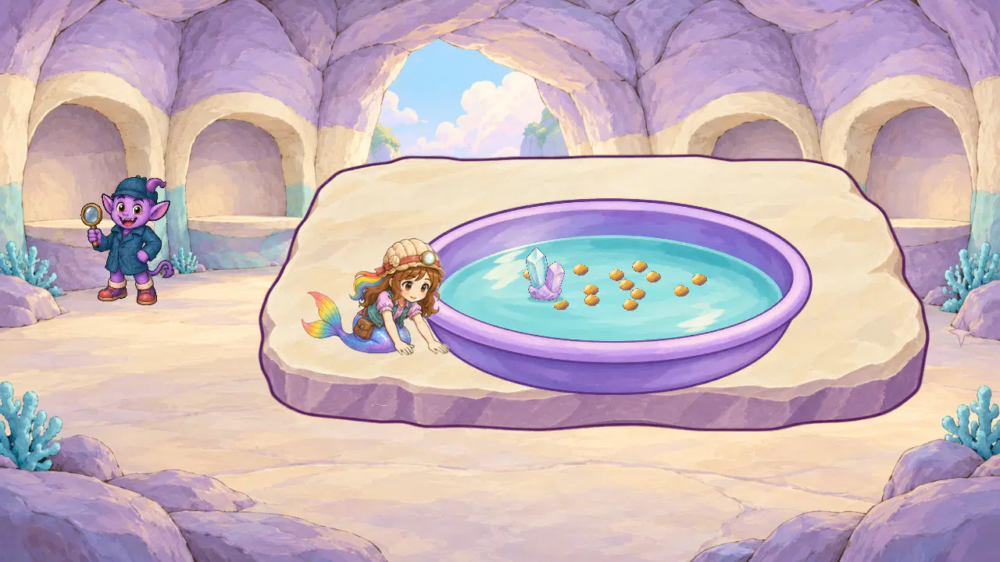
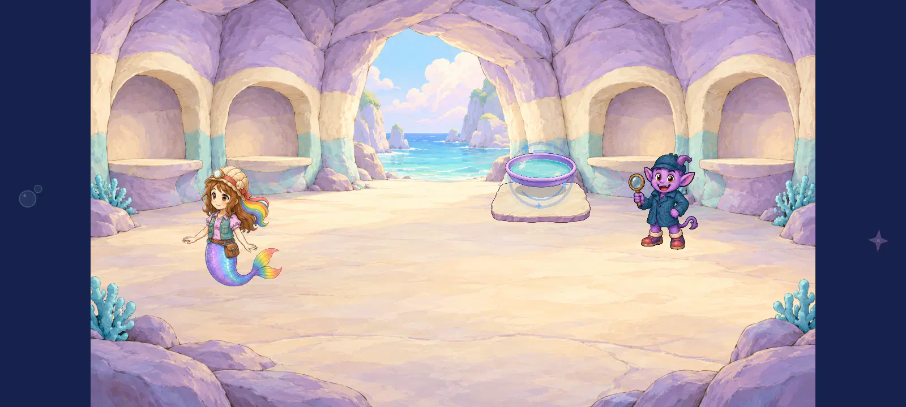
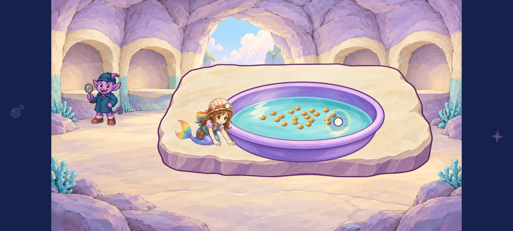

Geologist actor reuse — all6 native views
6/6 directly inspected. Existing whole-card placement improves contact2.7 to4.2 but retains crawl-like low wrists and work semantics3.8. This is an incomplete prototype. Source identity/full fin4.6 stays unchanged. A real panning/gripping pose is the named gap; complete motion/routes/device/child/owner/report remain open.
Individual scores/hashes · Exact source and transforms · Machine receipt · Previous source and detail iterations
geologist_1280_pan_invitation_painted_staging

Same unchanged invitation art; no actor-work contact exists in this state, so none is scored.
actor identity finish 4.6/5; object finish 4.6/5; object geometry 4.6/5; scene coherence 4.4/5
Only a disposable native static position/layer study using the unchanged approved work atlas. Actual inherited panning input and three reversals; no complete ordinary career/training/story route, timed acting, target-device/child/owner or final-report acceptance.geologist_1280_pan_opened_task_painted_staging
The unchanged complete pose now sits on the left slab instead of working remotely from the floor. One hand approaches the outside pan wall, improving static contact2.7 to4.2, while the other palm still rests on the slab. Her low crawl-like wrists do not grip or pan the vessel; work semantics3.8. Whole-card positioning cannot repair the missing panning gesture. Identity, full fin and original pixels remain intact4.6; source reuse alone does not reach the action floor.
actor identity finish 4.6/5; actor tabletop placement 4.4/5; actor pan contact 4.2/5; pose work semantics 3.8/5; object finish 4.6/5; object geometry 4.6/5; scene coherence 4.4/5
Only a disposable native static position/layer study using the unchanged approved work atlas. Actual inherited panning input and three reversals; no complete ordinary career/training/story route, timed acting, target-device/child/owner or final-report acceptance.geologist_1280_pan_partial_panning_reversals_painted_staging

The unchanged complete pose now sits on the left slab instead of working remotely from the floor. One hand approaches the outside pan wall, improving static contact2.7 to4.2, while the other palm still rests on the slab. Her low crawl-like wrists do not grip or pan the vessel; work semantics3.8. Whole-card positioning cannot repair the missing panning gesture. Identity, full fin and original pixels remain intact4.6; source reuse alone does not reach the action floor.
actor identity finish 4.6/5; actor tabletop placement 4.4/5; actor pan contact 4.2/5; pose work semantics 3.8/5; object finish 4.6/5; object geometry 4.6/5; scene coherence 4.4/5
Only a disposable native static position/layer study using the unchanged approved work atlas. Actual inherited panning input and three reversals; no complete ordinary career/training/story route, timed acting, target-device/child/owner or final-report acceptance.geologist_1600_pan_invitation_painted_staging

Same unchanged invitation art; no actor-work contact exists in this state, so none is scored.
actor identity finish 4.6/5; object finish 4.6/5; object geometry 4.6/5; scene coherence 4.4/5
Only a disposable native static position/layer study using the unchanged approved work atlas. Actual inherited panning input and three reversals; no complete ordinary career/training/story route, timed acting, target-device/child/owner or final-report acceptance.geologist_1600_pan_opened_task_painted_staging

The unchanged complete pose now sits on the left slab instead of working remotely from the floor. One hand approaches the outside pan wall, improving static contact2.7 to4.2, while the other palm still rests on the slab. Her low crawl-like wrists do not grip or pan the vessel; work semantics3.8. Whole-card positioning cannot repair the missing panning gesture. Identity, full fin and original pixels remain intact4.6; source reuse alone does not reach the action floor.
actor identity finish 4.6/5; actor tabletop placement 4.4/5; actor pan contact 4.2/5; pose work semantics 3.8/5; object finish 4.6/5; object geometry 4.6/5; scene coherence 4.4/5
Only a disposable native static position/layer study using the unchanged approved work atlas. Actual inherited panning input and three reversals; no complete ordinary career/training/story route, timed acting, target-device/child/owner or final-report acceptance.geologist_1600_pan_partial_panning_reversals_painted_staging
The unchanged complete pose now sits on the left slab instead of working remotely from the floor. One hand approaches the outside pan wall, improving static contact2.7 to4.2, while the other palm still rests on the slab. Her low crawl-like wrists do not grip or pan the vessel; work semantics3.8. Whole-card positioning cannot repair the missing panning gesture. Identity, full fin and original pixels remain intact4.6; source reuse alone does not reach the action floor.
actor identity finish 4.6/5; actor tabletop placement 4.4/5; actor pan contact 4.2/5; pose work semantics 3.8/5; object finish 4.6/5; object geometry 4.6/5; scene coherence 4.4/5
Only a disposable native static position/layer study using the unchanged approved work atlas. Actual inherited panning input and three reversals; no complete ordinary career/training/story route, timed acting, target-device/child/owner or final-report acceptance.